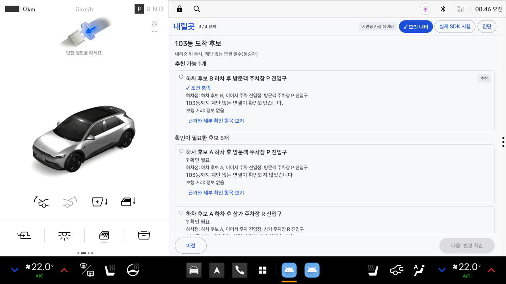

조용한 조종석: 회색이 화면을 만들고 파랑은 선택에만
Pleos는 두 얼굴을 가진다. 마케팅 사이트 pleos.ai는 순흑 #000 위에 초록, 파랑, 빨강 빛줄기가 교차하는 영상 히어로와 흰 워드마크로 "소프트웨어 정의 차량"의 에너지를 보여준다. 반면 차 안의 Pleos Connect는 정반대로 조용하다. 흰 카드와 옅은 회색 바탕, 짙은 회색 버튼, 그리고 꼭 필요할 때만 한 번 쓰는 파랑 하나. 운전자가 1~2초 안에 읽고 다시 도로를 보게 만드는 것이 이 시스템의 목적이다.
차량용 앱에 적용할 때 기준은 Connect 쪽이다. 마케팅의 빛줄기는 앱에 가져오지 않는다. 대신 pleos.ai 팔레트(--color-pleos-*)에서 상태 색 세 가지(파랑 선택, 초록 확인, 빨강 경고)를 빌려 오고, 나머지는 Connect grayscale(basic_00~900)로 채운다. 결과는 "조용한 조종석": 정보는 크게, 장식은 없게, 색은 의미가 있을 때만.
바탕은 #F7F8FA (basic-50), 카드는 #FFFFFF (basic-00), 본문은 #131417 (basic-900). 주 행동 버튼은 #44464E (basic-600) 채움이며 파랑이 아니다. 파랑 #2350FF (pleos-blue-3)은 선택 표시, 추천 표시, 포커스에만 쓴다.
서체는 Asta Sans 하나. Pleos Connect 시스템 sans-serif가 이미 Asta Sans로 교체되어 있다. 회색 단계(basic_00~900)가 화면의 90%를 만들고, 상태는 색과 기호를 함께 쓰며(색맹, 야간, 눈부심 대응), 큰 터치 영역 76dp 이상과 버튼 사이 23dp 이상을 지킨다. 누르면 95%로 줄어드는 촉각형 피드백 외에는 움직임이 없다.
Pleos / --color-pleos-* + Connect basic_00~900
pleos.ai CSS의 named palette 20색과 Pleos Connect 공식 디자인 가이드의 grayscale, system token, 타이포 위계를 묶은 차량용 디자인 시스템 리포트. 세 가지만 지키면 80%가 맞는다: 회색 바탕 위 흰 카드, 짙은 회색 주 버튼, 파랑은 선택 표시에만.

// 1) 서체: 기기 sans-serif가 // Asta Sans. 별도 번들 불필요. val Asta = FontFamily.SansSerif
// 2) 바탕과 글자
val Bg = Color(0xFFF7F8FA)
// {colors.basic-50}
val Surface = Color(0xFFFFFFFF)
// {colors.basic-00}
val Ink = Color(0xFF131417)
// {colors.basic-900}// 3) 의미 색 하나
val Accent = Color(0xFF2350FF)
// {colors.pleos-blue-3}#2350FF 파랑으로 두지 말 것. 대신 #44464E를 쓴다. 파랑은 "선택됨"과 "추천"에만 쓰는 의미 색이다. 흰 바탕 글자에 #FA293C, #00D791을 쓰는 것도 금지.
출처는 셋: 웹 CSS, 공식 가이드, 에뮬레이터
--color-pleos-* 20개는 pleos.ai CSS에 실재한다. basic-* grayscale 11개는 CSS가 아니라 공식 가이드의 Grayscale 표에서 읽은 값이다. 두 출처를 섞지 않도록 토큰 이름을 분리했다.
https://pleos.ai/?locale=ko-KR (Next.js, CSS 3개 224KB, 2026-11-15 수집)document.pleos.ai/docs/connect/guide/docs-design/): Colors, Typography, Design Token, Theme, Basic button, Layout, Designing apps for driving, Shadow, Segmented menu, Interaction/product/etc/fonts_customization.xmldocs.partner.android.com/drivingux): 터치 76x76dp, 간격 23dp, 본문 최소 24dp, 대비 4.5:1, 2초 판독screenshots/hero-cropped.png, section-1.png, section-2.pngKnown Gaps & Assumptions
- Label 위계 크기(24)는 가이드 이미지가 수집되지 않아 Android Design for Driving의 최소 본문 24dp로 가정했다.
- 그림자 level-1 수치는 가이드 Shadow 문서의 3단계 구조만 확인했고, 정확한 blur 값은 추정이다.
- 버튼 radius 20dp, 높이 88dp는 가이드 SVG 비율과 터치 76dp 기준에서 정한 값으로, 공식 수치가 아니다.
- alpha 계열(alpha_dark_50 등)의 정확한 투명도는 수집하지 못했다. basic_100으로 대체했다.
- pleos.ai 히어로는 영상이라 스크린샷 프레임마다 색 분포가 다르다. 브랜드 색 판정에는 CSS만 썼다.
웹은 Next.js + Tailwind v4, 차는 Android Automotive
마케팅 사이트와 차량 OS는 기술 스택이 다르다. 적용 대상(Naerio, 내리오)은 Compose 토큰 객체로 옮긴다.
--tw-*, --radius-sm: .25rem, --ease-in-out: cubic-bezier(.4,0,.2,1)).TMO4jG_button, ._rx1Ma_eyebrow)AstaSans_variable.woff2fonts_customization.xml이 sans-serif를 AstaSansOTF Light/Regular/Medium/Bold/ExtraBold로 재정의. 600은 Bold, 700 이상은 ExtraBold 파일Asta Sans 한 서체, 24px 아래는 없다
Pleos Connect 가이드 위계 Headline / Title / Body / Label 10단. 단위 px는 density 160에서 dp와 같다. 아래 미리보기는 실제 크기와 굵기로 렌더되며, 클릭해서 직접 문장을 바꿔 볼 수 있다.
Asta Sans (42dot). pleos.ai --font-asta-sans: "astaSans", 차량 시스템 sans-serifNoto Sans CJK (기기 기본 CJK 대체)letter-spacing: -.01em 30회)을 쓴다. 웹 스케일은 앱에 쓰지 않는다. 다만 큰 제목의 -0.01em 자간 보정은 앱 제목(title-l, headline-s)에도 적용한다. 가이드는 "캐릭터가 강조된 폰트를 지양"하라고 명시한다. 두 번째 서체를 섞지 않는다.공식 가이드 근거

Headline 60 / 56 / 48

Title 40 / 36 / 32

Body 30 / 28 / 26
회색 11단 위에 파랑, 초록, 빨강 한 방울
pleos.ai CSS의 named palette 20색(상태 색 3계열 x 4단 + 무채색 8개)과 Pleos Connect grayscale 11단(Light/Dark 반전). 스와치를 클릭하면 hex가 복사된다. ★는 brand anchor.
.TMO4jG_button{background:#111})Alias Layer: System Token 매핑
대비 검증 (WCAG)
공식 가이드 근거

Grayscale 표: basic_00~900 Light / Dark

System token: background_primary / secondary / popup
4dp 그리드 6단, 터치는 76dp
앱 창(약 1706x1210dp)에 맞춘 단계. 막대 길이는 값에 비례(3배 확대)한다.
아이콘과 글자 사이
칩 내부
카드 내부 줄 간격
카드 사이, 터치 대상 사이(23dp 이상)
카드 패딩, 화면 좌우 여백
2단 레이아웃 열 간격
터치 대상 최소 76x76dp
라디우스(모서리 반경) 4단: 카드 24, 컨트롤 20
pleos.ai 웹은 border-radius:10px (5회)와 0 (6회)이 주류다. 차 안 화면은 더 둥글다.
2147483647px섀도우는 3단계 중 1단계만
Connect 가이드는 3단계 그림자를 둔다. 차량 앱은 평평하게 유지하고 level-1만 쓴다.
--shadow-xl)움직임은 누름 95% 하나
운전 중 시선을 끄는 애니메이션, 자동 스크롤, 진입 연출은 금지 (가이드 "Designing apps for driving").
오른쪽 앱 창 하나, 결정과 근거의 2단
상태 표시줄, 왼쪽 Driving view, 하단 GNB는 시스템 영역이다. 앱은 오른쪽 Application window 하나를 쓴다.
Screen Frame
- 시스템 영역: 상태 표시줄, 왼쪽 Driving view, 하단 GNB
- 앱 영역: 오른쪽 Application window (약 1706x1210dp)
- Display: 2560x1440, density 160
Top Bar
- 왼쪽: 앱 이름, 4단계 진행 표시
- 오른쪽: 데이터 배지, 모드 세그먼트, 진단 버튼
Body
- 1200dp 이상: 2단. 왼쪽 "결정", 오른쪽 "근거와 조건"
- 1200dp 미만: 1단
- 열 간격: space-6 48dp
Bottom Action Bar
- 위치: 고정. 스크롤에 가려지지 않는다
- 구성: 왼쪽 "이전", 오른쪽 주 버튼
Card List
- 원칙: 균등 그리드보다 위계 우선
- 배치: 추천 1개를 크게, 나머지는 작게
- 카드: radius 24dp, 패딩 32dp, 테두리 없음
Orientation
- 필수: Landscape와 Portrait 모두 대응 (가이드 Display Layout)
[ Status bar ] [ Driving view | Application window ] [ GNB ]
에뮬레이터 실화면

Pleos Connect v2.1.0 에뮬레이터: 시스템 설정 화면
분기점은 1200dp 하나
차량 디스플레이 분할 상태에 따라 2단과 1단을 오간다.
회색 버튼, 흰 카드, 세 겹 상태 칩
데모는 design.md 스펙 그대로 실제 크기(1dp = 1px)로 렌더했다. 버튼은 눌러 보면 95%로 줄어든다. 각 코드 블록은 Copy 버튼으로 복사할 수 있다.
Button(
onClick = onApply,
modifier = Modifier.heightIn(min = 88.dp),
shape = RoundedCornerShape(20.dp),
colors = ButtonDefaults.buttonColors(
containerColor = Color(0xFF44464E), // basic-600
contentColor = Color(0xFFFFFFFF) // basic-00
),
contentPadding = PaddingValues(horizontal = 40.dp)
) { Text("이 계획을 내비에 적용", fontSize = 32.sp, fontWeight = FontWeight.Bold) }.btn-basic { background:#EDEEF2; color:#131417; min-height:76px; border-radius:20px; }
.btn-basic:active { background:#E0E1E6; transform:scale(.95); }
.btn-disabled { background:#EDEEF2; color:#A4A8AE; }<div class="segmented"> <button aria-selected="true">주간</button> <button>야간</button> </div>
.card { background:#FFFFFF; border-radius:24px; padding:32px; }
.card[aria-selected="true"] { outline:3px solid #2350FF; }
.card[aria-disabled="true"] { background:#F7F8FA; border:1px solid #E0E1E6; }<span class="chip chip--ok">✓ 확인됨</span> <span class="chip chip--unknown">? 확인 필요</span> <span class="chip chip--no">✕ 미충족</span>
<div class="banner banner--info">시연용 가상 데이터입니다.</div> <div class="banner banner--warn">이 구간은 계단이 있어 휠체어 이동이 어렵습니다.</div>
StepIndicator(current = 2, total = 4) DataBadge(text = "시연용 가상 데이터")
Canvas(Modifier.fillMaxWidth().height(56.dp)) {
drawLine(Color(0xFF44464E), start, parking, strokeWidth = 6.dp.toPx())
drawLine(Color(0xFF2350FF), parking, dest, strokeWidth = 6.dp.toPx(),
pathEffect = PathEffect.dashPathEffect(floatArrayOf(12.dp.toPx(), 10.dp.toPx())))
}공식 가이드 근거

Basic button: filled / basic 상태별 토큰
결론 먼저, 120자 이내
짧은 평서문. 확인되지 않은 것은 확인되지 않았다고 쓴다.
CSS / Tailwind 내보내기
Compose 대상이지만 웹 프로토타입용 토큰도 남긴다. 그대로 복사해 붙여 넣을 수 있다.
:root {
--font: "Asta Sans", "astaSans", sans-serif;
--bg: #F7F8FA; /* {colors.basic-50} */
--surface: #FFFFFF; /* {colors.basic-00} */
--sunken: #EDEEF2; /* {colors.basic-100} */
--line: #E0E1E6; /* {colors.basic-200} */
--ink: #131417; /* {colors.basic-900} */
--ink-2: #44464E; /* {colors.basic-600} */
--ink-3: #686A72; /* {colors.basic-500} */
--muted: #A4A8AE; /* {colors.basic-400} */
--cta: #44464E; /* {colors.basic-600} */
--cta-pressed: #313236; /* {colors.basic-700} */
--accent: #2350FF; /* {colors.pleos-blue-3} */
--accent-tint: #CDDCFF; /* {colors.pleos-blue-1} */
--ok-bg: #BEFFE1; /* {colors.pleos-green-1} */
--ok-fg: #053C32; /* {colors.pleos-green-4} */
--no-bg: #FFD7DC; /* {colors.pleos-red-1} */
--no-fg: #5F0F14; /* {colors.pleos-red-4} */
--warn: #FA293C; /* {colors.pleos-red-3} */
--radius-card: 24px;
--radius-control: 20px;
--touch: 76px;
}
@media (prefers-color-scheme: dark) {
:root {
--bg: #131417; /* {colors.basic-900} as dark basic_00 */
--surface: #1D1E21; /* {colors.basic-800} as dark basic_50 */
--sunken: #313236; /* {colors.basic-700} as dark basic_100 */
--ink: #F7F8FA; /* {colors.basic-50} as dark basic_800 */
--accent: #5087FF; /* {colors.pleos-blue-2} */
}
}
.btn-filled { background: var(--cta); color: #FFFFFF; min-height: 88px; border-radius: var(--radius-control); }
.btn-filled:active { background: var(--cta-pressed); transform: scale(.95); }
.card { background: var(--surface); border-radius: var(--radius-card); padding: 32px; }
.card[aria-selected="true"] { outline: 3px solid var(--accent); }colors: {
pleos: { blue: { 1: "#CDDCFF", 2: "#5087FF", 3: "#2350FF", 4: "#0F235A" },
green: { 1: "#BEFFE1", 2: "#69F5B9", 3: "#00D791", 4: "#053C32" },
red: { 1: "#FFD7DC", 2: "#FF96A0", 3: "#FA293C", 4: "#5F0F14" } },
basic: { 0: "#FFFFFF", 50: "#F7F8FA", 100: "#EDEEF2", 200: "#E0E1E6", 300: "#C7C9CE",
400: "#A4A8AE", 500: "#686A72", 600: "#44464E", 700: "#313236", 800: "#1D1E21", 900: "#131417" }
}에이전트 가이드
AI 에이전트가 Pleos Connect 스타일 화면을 만들 때 참조하는 Quick reference.
Example Component Prompts
Pleos Connect 차량 앱 화면. 바탕 #F7F8FA, 흰 카드 radius 24, Asta Sans. 주 버튼은 #44464E 채움 높이 88. 파랑 #2350FF는 선택 테두리에만.
상태 칩은 ✓ 확인됨(초록 틴트), ? 확인 필요(회색), ✕ 미충족(빨강 틴트). 색만으로 구분하지 말 것.
1200dp 이상이면 2단: 왼쪽 결정, 오른쪽 근거. 하단 행동 바 고정.
본문 최소 24dp, 결정용 텍스트 32dp, 터치 76dp, 간격 23dp. 애니메이션은 누름 95%만.
- press-scale-feedback:
Modifier.graphicsLayer { scaleX = s; scaleY = s }, s = if (pressed) 0.95f else 1f, tween 100ms - semantic-chip-triplet: green-1/green-4, basic-100/basic-600, red-1/red-4. 기호는 ✓ ? ✕ 고정
- accent-only-on-selection: selected border 3dp
#2350FF; CTA bg#44464E - pill-on-gray-segment: container basic-100 radius 20dp padding 6dp, indicator basic-00 radius 16dp + level-1 shadow
- route-strip-diagram: Canvas drawLine 6dp solid basic-600 /
PathEffect.dashPathEffect(12dp,10dp)blue-3 - tight-display-tracking: letterSpacing -0.01em on title-l, headline-s (pleos.ai
letter-spacing:-.01em30회)
Do / Don't
design.md DO / DON'T 규칙과 이 시스템이 쓰지 않는 것.
DO
- 바탕
#F7F8FA, 카드#FFFFFF로 두 단계 면을 만든다. - 주 버튼은
#44464E, 누르면#313236. - 선택된 카드에만
#2350FF3dp 테두리. - 상태는 색 + 기호 + 단어.
- 야간에는 basic 단계를 뒤집은 Dark 표를 쓴다.
DON'T
- 주 버튼 배경을
#2350FF파랑으로 두지 말 것. 대신#44464E사용. - 흰 바탕 글자에
#FA293C또는#00D791사용 금지. 대신 칩 글자#5F0F14,#053C32. - 본문 글자를
#A4A8AE로 두지 말 것 (2.4:1). 보조 글자는#686A72. - 카드에 1dp 회색 테두리를 기본으로 두지 말 것. 면 대비(
#F7F8FA위#FFFFFF)로 구분. fontSize24sp 미만 금지.- 두 번째 서체(Roboto, Pretendard, Noto Sans 직접 지정) 금지.
FontFamily.SansSerif= Asta Sans. - 진입 애니메이션, 자동 스크롤, 깜빡임 금지.
자주 틀리는 것들
What This Site Doesn't Use (Negative-Space Identity)
- 그라디언트 면: 마케팅 히어로 영상 외에는 없다.
- 보라, 주황, 노랑 계열: 팔레트에 없다. 주의 상태도 빨강 틴트로 처리한다.
- 굵기 100, 200, 900: 시스템 폰트 매핑에 Light 아래 단계가 없다.
- 글래스모피즘 블러: pleos.ai 메뉴에만 있고 차량 화면에는 없다.
- 그림자 2단계 이상의 떠 있는 카드: 차량 앱은 평평하다.
- 장식용 일러스트, 이모지 아이콘.